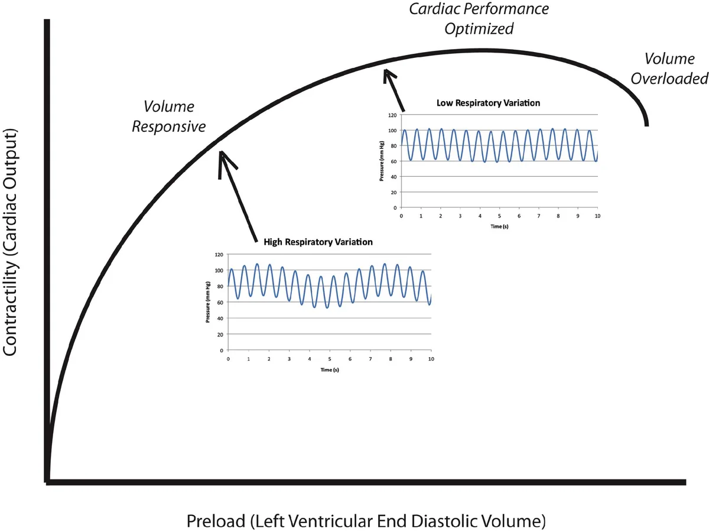
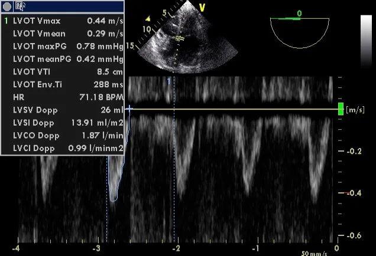
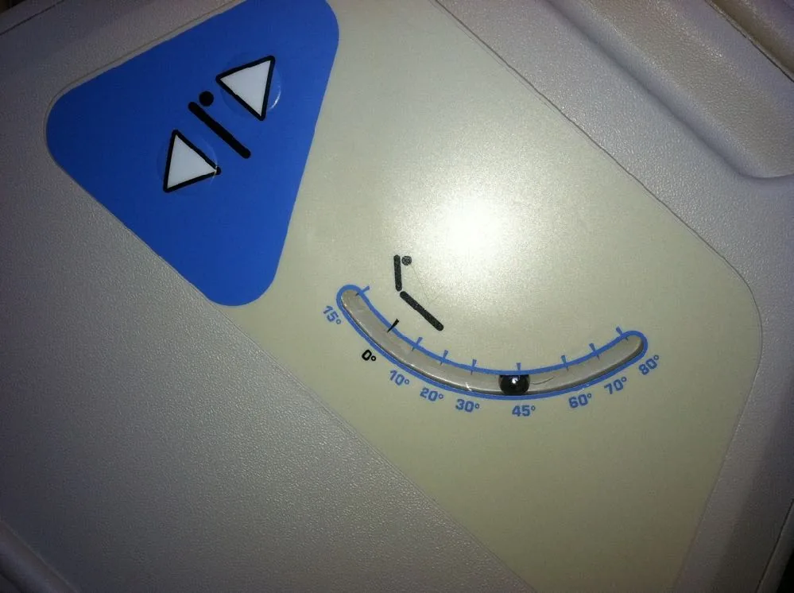
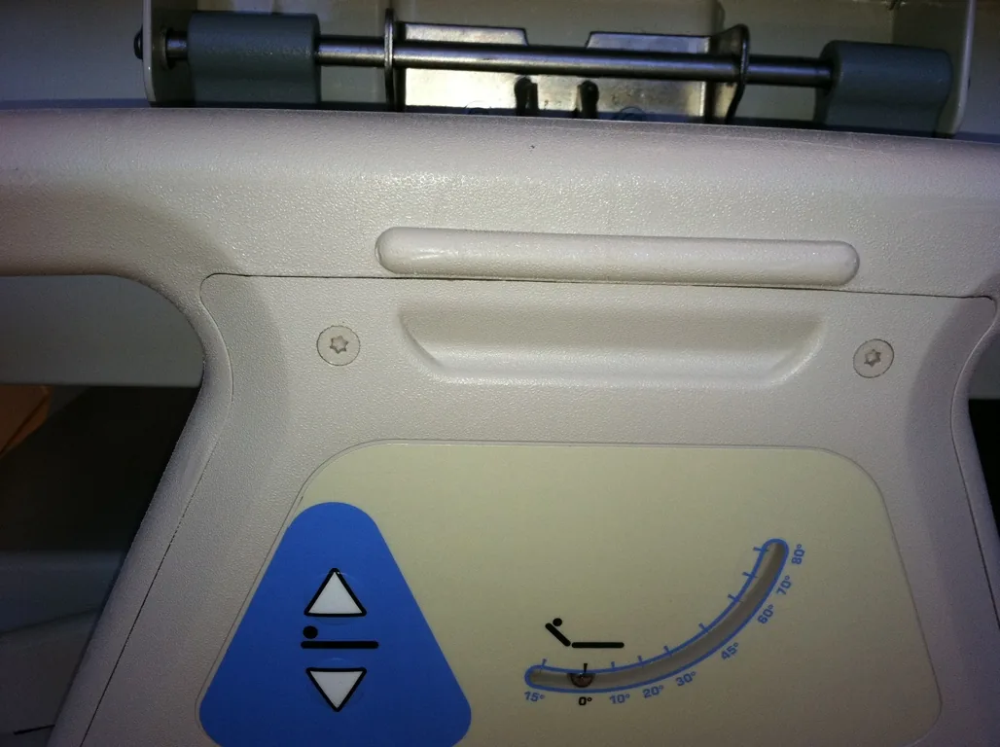
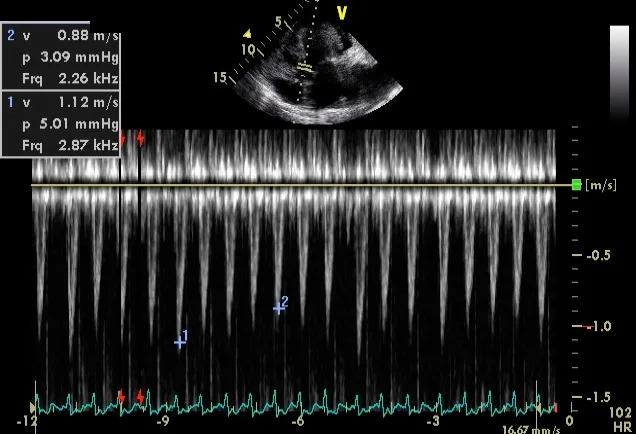

POCUS · Haemodynamics
Flow and fluid assessment.
Measure flow. Test a response. Check the cost of more fluid.

A vigorous ventricle can deliver little blood. A positive passive leg raise can coexist with pulmonary oedema. This lecture separates those questions.
Adult perioperative and critical care. Learn the windows first: Focused cardiac ultrasound.
- EF versus stroke volume, cardiac output and perfusion.
- LVOT Doppler: acquisition and error.
- Why static measures (CVP, LVEDA, IVC size) predict response poorly.
- Passive leg raise and respiratory variation indices.
- Response combined with lung and venous findings.
Four labs and real clips. Vary ventricular volume, regurgitation, Doppler angle and test timing. The labs are schematic: outputs do not validate a patient measurement or prescribe treatment.
Static measures → · Aortic velocity → · Clip questions → · Sources →
01 · The decision
Three questions before a bolus.
| Question | What to establish | What cannot answer it alone |
|---|---|---|
| Need | Is tissue perfusion inadequate, and is fluid an appropriate way to improve it? | Hypotension, oliguria or lactate in isolation. |
| Response | Will greater preload raise stroke volume or cardiac output? | One IVC diameter, CVP or EF. |
| Tolerance | Will more fluid worsen pulmonary or systemic congestion? | A positive PLR or a small IVC. |
Assess the trajectory: mental state, capillary refill, skin temperature, urine output, lactate, arterial pressure, suspected mechanism. Each answers a different question and changes at a different speed.
Persistent shock after initial resuscitation: test fluid responsiveness before more fluid. A non-responder may need a vasopressor, an inotrope or relief of obstruction; the scan suggests which.
Responsive does not mean thirsty. A stable patient may be responsive without needing fluid. A patient with ARDS may be responsive but poorly tolerant.
Where the scan fits
| Question | Echo measures in this lecture |
|---|---|
| Volume status | IVC at end-expiration; LV end-diastolic area (static measures). |
| Response | LVOT VTI with PLR; aortic velocity and IVC variation on the ventilator; SVC collapsibility on TOE. |
| Tolerance | RV function, mitral inflow E velocity, lung and venous Doppler. |
- Dynamic measures beat static ones.
- PLR is the best validated dynamic test; none is perfect.
- Choose by your skills and the patient.
- Preload dependence justifies volume only with haemodynamic failure.

02 · Static measures
A snapshot of size cannot tell you where the heart sits on its curve.
Static measures show how full a chamber or vein looks now, not the slope of its Frank–Starling curve. Use them at the extremes, then test.
Central venous pressure
Osman et al. (2007): CVP <8 mmHg and PAOP <12 mmHg predicted fluid response with positive predictive values of only 47% and 54% (61% and 69% if stroke volume index <30 mL/m²). A low CVP is often wrong; a normal or high CVP does not exclude response.
LV end-diastolic area (LVEDA)
- Parasternal short axis, mid-papillary level, on axis: round LV, both papillary muscles in view.
- Freeze at end-diastole (largest frame, at the QRS); trace the endocardium, excluding papillary muscles.
- Check end-systole: a tiny cavity with “kissing” papillary muscles is classic low preload in a vigorous LV.
Values (Leung 1994). Normal LVEDA 9.5–22 cm²; very low LVEDA (<5.5 cm²/m² body surface area) suggests hypovolaemia. The FUSA algorithm quotes <5.5 cm² unindexed. The original study’s unit is unchecked: an orientation, not a cut-off.
Pitfalls. Poor border definition or an oblique cut changes the area. A stiff, hypertrophied LV is small and underfilled despite normal central venous volume: a small cavity with thick walls is not proof of hypovolaemia. A small, hyperdynamic LV in early sepsis can obstruct its own outflow (pump patterns in shock).
IVC at end-expiration
Pinsky 2017 editorial (ventilated patients): end-expiratory IVC measurable in 78%; diameter <13 mm predicted fluid response with 80% specificity, but only 29% were below 13 mm, and the sign failed with intra-abdominal pressure >12 mmHg. Helpful when small; most patients sit in the uninformative middle.
Measure perpendicular to the long axis, near the right atrial junction, not at the hepatic vein confluence. Subcostal acquisition → · Respiratory IVC indices →
Osman et al., 2007 · Leung & Levine, 1994 · Vignon et al., 2017
03 · Ventricular output
Same EF. Different stroke volume.
EF = (EDV − ESV) / EDV × 100%
Total LV stroke volume = EDV × EF / 100
EF 70% with EDV 40 mL gives total stroke volume of only 28 mL. A larger chamber can eject more despite a lower EF.
In mitral regurgitation, part of ejection returns to the left atrium: preserved total EF, reduced forward stroke volume. The model holds EF and EDV fixed while you vary the regurgitant fraction.
Isolated MR model: forward SV = total SV × (1 − regurgitant fraction). No other regurgitation or shunt; does not model MR loading changes or grade severity.
Schematic · volume and ejection
Try EDV 40 mL, EF 70%; then EDV 120 mL with MR. Describe total and forward ejection separately.
04 · Acquisition
Match the area to the velocity.
- Diameter: zoomed, on-axis PLAX; inner edge to inner edge in midsystole, per laboratory protocol (ASE 2019: about 3–10 mm proximal to the valve plane).
- Doppler: A5C or A3C, beam as parallel to LVOT flow as possible; PW gate about 5 mm proximal to the aortic valve.
- Optimise: a clear systolic spectrum. Broadening or valve contamination: move the gate out of the acceleration region.
- Trace: the dense modal signal, not faint noise. Average representative beats; document the rhythm.
Diameter and Doppler sample must be at the same level. A precise trace cannot rescue an oblique diameter.
Find flow direction with colour, then refine. No routine electronic angle correction for cardiac Doppler: align by moving the probe.
Serial comparisons: keep view, gate, gain and tracing method constant. Don’t change vasoactive support or ventilation during a manoeuvre unless safety requires it.
ASE comprehensive TTE, 2019 · Practise the gate in cardiac Sim 8 →
The real view: SV = CSA × VTI

05 · From distance to flow
VTI is a distance. Area makes it a volume.
Area = π × (diameter / 2)²
SV = area × VTI
CO = SV × heart rate / 1000
Diameter and VTI in cm give SV in mL; × HR ÷ 1000 gives L/min.
Diameter 2.0 cm, VTI 20 cm, HR 80/min: area 3.14 cm², SV 62.8 mL, CO 5.03 L/min. Adequacy depends on body size, metabolic demand and perfusion.
Significant aortic regurgitation makes systolic LVOT flow exceed net systemic flow. Shunts, obstruction and irregular rhythm need fuller assessment.
Inputs are an ideal reference signal; angle and diameter-error controls add isolated errors. Real errors may coexist.
Schematic · LVOT area and Doppler envelope
Set diameter error +10%, then change only the angle. Why can the errors partly cancel without making the measurement reliable?
06 · Precision
Small errors can change the conclusion.
| Change | Effect in the ideal model | Practical response |
|---|---|---|
| Diameter overestimated by 10% | Area and calculated SV increase by 21%. | Review the view and calipers before trusting absolute output. |
| Diameter underestimated by 10% | Area and calculated SV decrease by 19%. | The squared relationship is not symmetrical. |
| Doppler angle increases | Measured velocity falls approximately with cos θ. | Improve alignment; do not average poor and good windows. |
| HR changes during a test | VTI change and CO change diverge. | Record HR and interpret the complete flow response. |
Short intervention, stable LVOT area: relative VTI change estimates relative SV change; re-measuring diameter each stage adds noise. 16 → 18 cm is a 12.5% rise, but with an unstable gate it is not a physiological response.
Near the threshold, repeat baseline traces. Reproducibility, not decimal places, sets confidence.
07 · Reversible preload challenge
Perform the manoeuvre before interpreting its number.
- Start semi-recumbent with a stable flow baseline.
- Use the bed: lower the trunk, raise the legs to about 45°. Recruits leg and splanchnic blood.
- Measure the early maximal SV or CO response, usually within the first minute; it fades quickly.
- Return to the start position; confirm flow returns towards baseline.
Blood pressure alone cannot replace the flow response. VTI tracks SV if LVOT area and acquisition stay stable.
Useful in spontaneous breathing or arrhythmia, when respiratory indices fail, if the flow measurement is precise.
Avoid pain, coughing, active leg lifting and sympathetic stimulation; new tachycardia suggests a confounded test. Raised intra-abdominal pressure can cause a false negative; some patients cannot be positioned.
Don’t delay urgent resuscitation for the test.
Use the bed, not the staff


More pitfalls
- False change from the probe: moving the patient changes the Doppler angle, and so VTI. Keep probe and window steady.
- False negative: severe hypovolaemia (little blood left in the legs); intra-abdominal pressure >16 mmHg.
- Avoid or adapt with abdominal compartment syndrome, open abdomen, or unstable pelvic or low lumbar fracture.
- Timing: read PLR at its early peak; allow 90 s to 3 min for flow to return to baseline before repeating.
08 · Response over time
The peak can disappear before a late measurement.
Run each scenario: compare baseline, early peak and recovery.
- Responsive: a transient flow rise with little HR change.
- No meaningful rise: preload increases without a clear SV response.
- Tachycardia: rising CO may reflect sympathetic stimulation, not preload.
Change (%) = (during − baseline) / baseline × 100
Denominator is baseline, not the mean. Interpretable only if the test was correct and the signal stable.
Schematic · scripted physiological responses
Illustrative time courses, not patient data. Scrub to compare identical phases.
09 · Interpreting a change
A borderline number needs better measurement.
A PLR-induced CO rise of about 10% is the commonly studied threshold. One TTE study in spontaneous breathing used a ≥12.5% SV rise to predict a ≥15% response to fluid. Cut-offs are method- and protocol-specific, not interchangeable.
Repeated TTE by the same operator: median least significant VTI change 11%, better with the probe left in place. Averaging 3 beats in sinus rhythm and 5 in AF gave adequate within-examination precision; sample more with marked variability.
VTI up 9–12%? Check: alignment unchanged, peak captured, representative beats averaged, HR unchanged, return to baseline.
Repeat an uncertain test or use another valid method. A small noisy change is not an instruction to give or withhold fluid.
Check the denominator. A 12% PLR rise in VTI (Lamia 2007; Maizel 2007) is sometimes shown divided by the mean of the two values (the respiratory-variation formula). PLR change is from baseline: 16 → 18 cm is 12.5% from baseline, 11.8% using the mean. Near a threshold, the formula decides.
10 · Caval variation
Name the formula before quoting the percentage.
Follow the IVC into the right atrium; measure perpendicular to the vessel over several breaths. Off-centre cuts and out-of-plane translation mimic collapse.
Collapsibility = ΔD / Dmax × 100
Distensibility = ΔD / Dmin × 100
Variability = ΔD / Dmean × 100
Dmean = (Dmax + Dmin)/2. For 20 and 10 mm: 50%, 100% and 66.7%. Same diameters, different denominators.
Controlled-ventilation thresholds: 18% distensibility (Barbier, minimum denominator) and 12% variability (Feissel, mean denominator). Both required intubated patients, no respiratory effort, tidal volume >8 mL/kg predicted body weight; neither is universal. Feissel: 22 of 23 non-responders had IVC >1.5 cm.
IVC and RA pressure table, and Sim 7 →
Schematic · calibre, breathing and indices
Spontaneous inspiration usually narrows the IVC; passive positive-pressure inspiration may distend it. Shows the usual pattern only; does not diagnose volume status.
Gillman et al., 2009, supplement 8. Source · CC BY 2.0. Transcoded; audio and metadata removed; display aspect ratio preserved. Media record →
11 · Caval pitfalls
Describe the IVC before you interpret it.
Technique traps
- Out-of-plane movement exaggerates collapse: the vessel slides out of the beam and seems to shrink.
- Not at the hepatic vein confluence. Don’t mistake the aorta (thick wall, pulsatile, does not join the right atrium).
| IVC looks | Despite the volume state, because of |
|---|---|
| Large, little variation | RV failure, tamponade, pulmonary embolism, tricuspid regurgitation, pulmonary hypertension or constriction; positive-pressure ventilation and PEEP. |
| Small or collapsing | Raised intra-abdominal pressure; forceful inspiratory effort, as in status asthmaticus. |
A small, collapsing IVC is the more useful finding. Falsely large IVCs are far commoner than falsely small ones, so a large IVC says little about fluid response.
Three patients in shock
No diagnosis is given. Practise the description:
- Is it the IVC? Follow it into the right atrium.
- Size at end-expiration, against the depth scale.
- Breathing change: none, partial or complete collapse? Spontaneous or ventilated?
- Real change, or out-of-plane translation?
- What else to scan before deciding: RV, pericardium, LV, lungs?
What these clips do not tell us
No diameters, breathing mode or diagnoses are given, so none is assigned. Describe the vessel, name the breathing mode, then judge whether the finding is informative. A large IVC in shock sends you to the RV and pericardium; alone, it is no reason to withhold fluid.
12 · Heart–lung interaction
The ventilator changes preload and afterload.
Positive intrathoracic pressure can reduce venous return; lung inflation can raise RV afterload. The effect depends on lung volume, compliance and existing RV disease.
A large IVC on PEEP does not prove excess volume; a small IVC with vigorous inspiratory effort does not prove fluid is safe. Read the vessel with RV function, ventilation and perfusion.
Record: spontaneous, assisted or controlled breathing; tidal volume, PEEP, rhythm, abdominal pressure.
Four mechanisms in a positive-pressure breath
- RV preload falls: rising pleural pressure reduces venous return (usually dominant).
- RV afterload rises: alveolar pressure rises more than pleural pressure.
- LV preload rises briefly: blood is squeezed out of the pulmonary capillaries.
- LV afterload falls.
The fall in RV output reaches the LV a few beats later (pulmonary transit). The bigger the ventilator-driven swing in LV stroke volume, the more likely preload responsiveness.
When respiratory indices mislead
- Spontaneous effort or patient–ventilator interaction.
- Low tidal volume or low respiratory-system compliance.
- Arrhythmia, especially for arterial pulse-pressure variation.
- RV dysfunction or altered pulmonary vascular load.
- Raised intra-abdominal pressure.
End-expiratory occlusion, tidal-volume and mini-fluid challenges need defined protocols and precise flow monitoring. Do not raise tidal volume just to get a usable number.
Conditions for validity: passive (sedated, no effort) on the ventilator, tidal volume 8–10 mL/kg, sinus rhythm. In ARDS, low compliance and low tidal volume limit how much airway pressure reaches the heart: a main reason pulse pressure and stroke volume variation fail there.
Pulse pressure variation (PPV) is not enough. Low LV preload may be hypovolaemia or a failing RV; PPV cannot tell them apart, echo can.
Mini-fluid challenge: three studies
All 100 mL, ventilated patients:
- Muller 2011: colloid over 1 min; change in aortic VTI predicted response (39 patients, acute circulatory failure, AUC 0.92).
- Mallat 2015: colloid; fall in pulse pressure and stroke volume variation (49 patients, <8 mL/kg).
- Biais 2017: crystalloid; 44 patients at 6–8 mL/kg, neurosurgery.
100 mL changes VTI by only a few per cent: needs a precise, unchanged Doppler signal.
13 · Aortic velocity
Peak velocity stands in for stroke volume, beat by beat.
Aortic flow is proportional to LV stroke volume, so the respiratory swing in LVOT peak velocity tracks the swing in stroke volume. Quicker than tracing every VTI. Shown with TOE in ventilated septic shock (Feissel 2001).
ΔVpeak = 100 × (Vpeak max − Vpeak min) / Vpeak mean
Vpeak mean = (max + min) / 2
ΔVpeak >12% identified responders. The denominator is the mean, unlike a PLR change.
- Apical five-chamber, PW gate in the LVOT just below the valve (as for VTI).
- Slow the sweep to fit several breaths.
- Measure the highest and lowest peak velocity within one breath.
Pitfalls: severe aortic stenosis, irregular rhythm, RV failure, low tidal volume, high PEEP, ARDS, spontaneous breaths.

Calculator · ΔVpeak
Arithmetic only: does not check rhythm, ventilation or tidal volume; not a treatment instruction.
14 · Evidence
Every dynamic index is only moderately accurate.
Vignon et al. (2017): four indices, each tested against a fluid challenge in the same 540 ventilated patients with acute circulatory failure (any cause, first 24 h).
| Index | Best threshold | Sensitivity | Specificity | AUC | Threshold for ~90% specificity |
|---|---|---|---|---|---|
| Pulse pressure variation (ΔPP) | ≥11% | 58% | 72% | 0.675 | 18% |
| Aortic peak velocity variation (ΔVmaxAo) | ≥10% | 79% | 64% | 0.752 | 18% |
| SVC variation (ΔSVC, TOE) | ≥21% | 61% | 84% | 0.755 | 31% |
| IVC variation (ΔIVC, TTE) | ≥8% | 55% | 70% | 0.635 | 18% |
Whole study population. In the subset with all four indices, ΔSVC performed best.
Feasibility
- ΔPP and ΔVmaxAo: about 78% of patients (>90% in sinus rhythm).
- ΔIVC: 78%.
- ΔSVC: almost everyone, but needs TOE.
What to do with a grey zone
- Persistent hypoperfusion, low risk of lung water: fluid may be reasonable even with low variation (<10%).
- High overload risk (e.g. ARDS): require the specific threshold (18% for ΔVmaxAo and ΔIVC) before fluid.
Tolerance sets how certain response must be.
A cluster, not a rule
Geri et al. (2019), septic shock: LVOT VTI <16 cm (low stroke volume), mitral E <67 cm/s (low filling pressure) and SVC collapsibility >39% (low RV preload) together were 99.3% specific for fluid responsiveness.
Caveats: post hoc cluster analysis; each value alone is far weaker; E <67 cm/s occurs in healthy people; foreshortening or a non-parallel beam underestimates VTI.
Take-home thresholds
| Breathing | Index | Threshold |
|---|---|---|
| Spontaneous | PLR rise in VTI (from baseline) | ≥12% |
| IVC collapsibility | ~40%: probably responsive | |
| Ventilated, passive | Aortic VTI or Vpeak variation | >12% (mean denominator) |
| IVC distensibility | >12% (mean) or >18% (minimum) |
Always consider respiratory status and RV function; reassess often.
15 · The cost of volume
Look downstream as well as forward.
| Domain | Useful observations | Interpretation |
|---|---|---|
| Lung | B-line distribution, new confluent artefacts, consolidation, effusions. | Reduced aeration has several causes; serial change may warn of worsening pulmonary oedema. |
| Right heart | RV size, function, septal interaction, tricuspid regurgitation. | A distended failing RV may worsen with further volume. RV assessment → |
| Left heart filling | Mitral inflow E velocity; LV size and wall thickness. | Low E fits low filling pressure, but E alone does not measure it: age, relaxation and loading all change E. |
| Systemic veins | IVC plus hepatic, portal and intrarenal Doppler. | Venous abnormalities support congestion; identify its cause. |
| Clinical trajectory | Oxygenation, work of breathing, organ function, fluid balance and perfusion. | Integrate with ultrasound; ultrasound does not replace it. |
- A-lines are not permission to infuse; B-lines do not prove cardiogenic oedema.
- New adverse lung or venous findings during resuscitation: reassess before more fluid.
- If giving fluid, set purpose, amount, delivery interval and reassessment endpoint first; then reassess SV or CO, perfusion and signs of harm.
Early sepsis: a small, hyperdynamic LV can develop dynamic intraventricular obstruction, associated with hypovolaemia (Chauvet 2015). Pump patterns in shock → Structured perioperative sequence (chronic disease, pump, volume versus vasodilatation, tamponade, lungs): Shock assessment.
16 · Venous Doppler
A congestion score is not a treatment order.
VExUS combines IVC size with hepatic, portal and intrarenal venous waveforms.
- IVC <2 cm: grade 0.
- IVC ≥2 cm: no severe waveform, grade 1; one, grade 2; two or more, grade 3.
Severe: hepatic systolic flow reversal, portal pulsatility ≥50%, discontinuous monophasic intrarenal venous flow. Time waveforms to the cardiac cycle and confirm the signal is venous.
Portal pulsatility = (Vmax − Vmin) / Vmax × 100%
What the score cannot establish
- Grade 0: no congestion by this scheme; not a guarantee of fluid tolerance.
- High grades do not separate fluid overload from RV failure, severe TR or obstructive physiology.
- Severe TR alters hepatic Doppler; portal pulsatility occurs in healthy people; renal signals can be technically difficult.
- Severe congestion was associated with AKI after cardiac surgery; treating to a score is not proven to improve outcomes.
Use it to reconsider further fluid and find the mechanism. Decongestion is a considered treatment, not an automatic response to an isolated score.
17 · Case
The PLR is positive. The lungs are deteriorating.
Septic shock; capillary refill still poor after initial resuscitation. A technically stable PLR raises VTI from 16 to 19 cm; HR unchanged; recovers to baseline. Oxygen requirement rising, new bilateral confluent B-lines, impaired RV.
Does this establish that the next treatment should be fluid?
Reveal reasoning
+18.75%: preload responsive under these conditions. That does not establish tolerance, or that fluid is the best way to improve perfusion.
The new findings weigh against an automatic bolus. Reassess the pulmonary process, RV function, systemic congestion and vasoactive support; treat the mechanism; monitor perfusion and harm. A responder can still have a poor risk–benefit balance for more volume.
Constructed vignette, not a validated decision rule.
18 · Case
A convincing percentage from an unstable trace.
VTI 16 → 18 cm during PLR. The probe is moved to regain the window, the patient coughs, HR rises 80 → 105/min. No recovery measurement.
What should be repeated before calling this responsive?
Reveal reasoning
+12.5% is correct arithmetic but an insecure inference: changed alignment or sample position, coughing and tachycardia confound it.
Repeat with a stable baseline: explain the manoeuvre, keep the same window, sample representative beats, capture the early peak, confirm recovery. If echo cannot hold a reliable signal, use another validated flow method.
VTI is a stroke-volume surrogate; with a changing HR it is not interchangeable with cardiac-output change.
19 · Case
The IVC is large. What has caused it?
A ventilated patient becomes hypotensive after a PEEP increase. IVC 24 mm, little variation; RV larger than on the last scan; septum flattened in systole.
Would the IVC alone justify diuresis or another fluid bolus?
Reveal reasoning
Neither. Suspect adverse heart–lung interaction and RV loading. Reassess ventilation, oxygenation, perfusion, RV function and other causes (pneumothorax, pulmonary vascular obstruction) when plausible.
The spontaneous-breathing IVC-to-RAP table does not apply on PEEP. A pressure-related venous change does not measure total circulating volume.
Review the PEEP change with the treating team, repeat the assessment, and treat the cause, not a diameter.
20 · Clip questions
Two clip questions. Commit, then read why.
21 · Retrieval
Choose the interpretation.
22 · References
Read the method behind the number.
- Mitchell C et al. Comprehensive transthoracic echocardiographic examination. ASE, 2019. Guideline →
- Lang RM et al. Cardiac chamber quantification. ASE/EACVI, 2015. Guideline →
- Zoghbi WA et al. Native valvular regurgitation. ASE, 2017. Guideline →
- Monnet X et al. Circulatory shock and haemodynamic monitoring. ESICM, 2025. Guideline →
- Monnet X, Teboul JL. Passive leg raising: five rules, not a drop of fluid! Critical Care, 2015;19:18. Open article →
- Lamia B et al. Echocardiographic prediction of volume responsiveness in critically ill patients with spontaneously breathing activity. Intensive Care Medicine, 2007;33:1125–1132. Study →
- Jozwiak M et al. What is the lowest change in cardiac output that transthoracic echocardiography can detect? Critical Care, 2019;23:116. Open study →
- Barbier C et al., 2004, and Feissel M et al., 2004. Respiratory IVC variation in ventilated septic patients. Barbier → · Feissel →
- Osman D et al. Cardiac filling pressures are not appropriate to predict hemodynamic response to volume challenge. Critical Care Medicine, 2007;35:64–68. PubMed search →
- Leung JM, Levine EH. Left ventricular end-systolic cavity obliteration as an estimate of intraoperative hypovolemia. Anesthesiology, 1994;81:1102–1109. PubMed search →
- Michard F, Teboul JL. Using heart–lung interactions to assess fluid responsiveness during mechanical ventilation. Critical Care, 2000;4:282–289. PubMed search →
- Feissel M et al. Respiratory changes in aortic blood velocity as an indicator of fluid responsiveness in ventilated patients with septic shock. Chest, 2001;119:867–873. PubMed search →
- Vignon P et al. Comparison of echocardiographic indices used to predict fluid responsiveness in ventilated patients. American Journal of Respiratory and Critical Care Medicine, 2017. PubMed search →
- Geri G et al. Cardiovascular clusters in septic shock combining clinical and echocardiographic parameters: a post hoc analysis. Intensive Care Medicine, 2019;45:657–667. PubMed search →
- Society of Critical Care Medicine. Critical Care Ultrasound: Adult, Day 1, “Echocardiographic Evaluation of Hypovolemia and Volume Responsiveness”. Used with permission. Media record →
- Beaubien-Souligny W et al. Development of the venous excess ultrasound grading system. Ultrasound Journal, 2020;12:16. Open study →
Next: Integrate the findings in shock → · Assess pulmonary patterns → · All POCUS lectures →
Adult teaching material, reviewed against selected references on 17 Oct 2026. Simulations are schematic and cases constructed; credited clips and stills are real scans. Some thresholds are quoted from lecture slides and not independently re-checked. Use supervised acquisition and local clinical protocols.